Chapter 0: Prologue
- Books and algorithms
- Ideas that changed the world.
- Widespread use of decimal system.
- Enter Fibonacci
0, 1, 1, 2, 3, 5, 8, 13, 21, 34, ....,- Also, $F_n = F_{n-1} + F_{n-2}$
- And, $F_n ≈ 2^{0.694n}$
- A naive implementation , with no caching of values..,
fib1- Runtime –> $T(n) >= F_n$, exponential in n
- Can We Do Better,….?
- A Polynomial algorithm…,
fib2- A loop based algorithm that remembers previous values in an array.
- Polynomial running time.
- More Careful Analysis
- What about addition of numbers Fibonacci values for large n.
- Adding two n-bit integers take time ~ n.
- So, $fib1 ≈ n.Fn$
- And, $fib2 ≈ n^2$
- Big-O notation
- Right simplification of the analysis.
- Leave behind the lower order terms.
- General rules :
- Multiplicative constants can be omitted.
- $n^a$ dominates $n^b, if a > b$
- Any exponential dominates any polynomial. $a^n$ dominates $n^b$
- Likewise, any polynomial dominates any logarithm. $n$ dominates $log(n)$
- Exercise 0.4
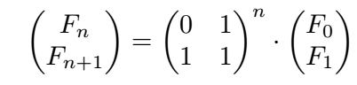- So now $F_n$ can be computed by calculating $X^n$ where $X$ is the square matrix.
- So, $Fn = O(log n)$
- But then, with careful analysis,
- Multiplication of large n-bit numbers $≈ O(n^2)$
Chapter 1: Algorithms with Numbers
Two ancient problems:
Factoring : Given a number N, express it as a product of its prime factors. Hard
Primality : Given a number N, determine whether it is a prime. Easy
Basic Arithmetic
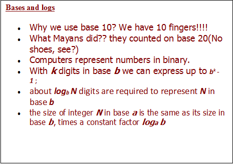
- Addition
The sum of any three single-digit numbers is at most two digits long.
Given two binary numbers x and y, how does our algorithm take to add them?
Depends on size of input, number of bits in x and y.
Running time $= O(n), n =$ number of bits in the numbers.
Is there anything faster? No..
About word length and large numbers - Multiplication and Division
To multiplyxandy, create an array of intermediate sums, each representing the product ofxby a single digit ify. These values are appropriately left shifted and added up.-
Running time = Addition of n numbers of n-bits length = $(n-1).O(n)$ = $O(n^2)$
-
Another fascinating algorithm for multiplication:
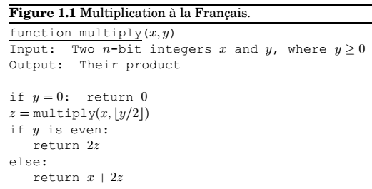 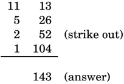
However, running time = $O(n^2)$ , n = number of bits.
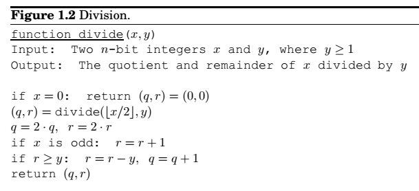
-
Modular Arithmetic
$$x \equiv y \pmod N \Leftrightarrow N divides (x - y)$$
-
Modular arithmetic is a system for dealing with restricted ranges of integers.
-
Another interpretation is that modular arithmetic deals with all the integers, but divides into N equivalence classes, each of the form ${i+kN:k\in \mathbb Z}, i \in [0, N-1]$.
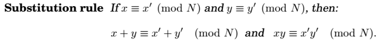
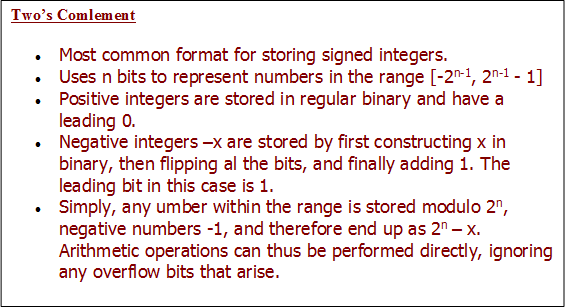 -
Modular addition and multiplication
Toaddtwo numbers x and y modulo N, we start with regular addition. Since x and y are both in the range 0 to N - 1, their sum is in the range 0 to 2(N-1). If the sum exceeds N-1, we merely need to subtract off N to bring it back to required range. So, running time $= O(n), n = log N$.To
multiplytwo mod N numbers x and y, do regular multiplication, reduce the answer to modulo N. The product can be as large as $(N-1)^2$, at most 2n bits large. Need to compute the remainder using quadratic time division algorithm. Multiplication thus remains quadratic.Division, however is tricky, whenever legal, it can be managed in quadratic time. -
Modular exponentiation
We want to compute $x^y \pmod N$.
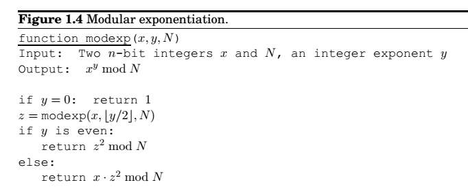
Let n be the size(bits) of x, y and N. As with multiplication, the algorithm will halt after at most n recursive calls, and during each call it multiplies n-bit numbers, for a total running time of $O(n^3)$. -
Euclid’s algorithm for G.C.D
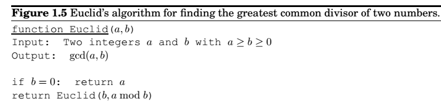
Eculid’s rule : If x and y are positive integers with $x >= y$ , then $gcd(x, y) = gcd(x \pmod y, y)$.
Also, if $a > b$, then $a \pmod b < a/2$.
This means after any two consecutive iterations, both arguments are at the very least reduced to half.If they are initially n-bit, base case will be reached in at most 2n recursive calls. And each call involves a quadratic-time division. Running time $= O(n^3)$. -
An extension to Euclid’s algorithm A small extension to Euclid’s algorithm is the key to dividing in the modular world.
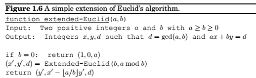 -
Modular division
x is the multiplicative inverse of a modulo N, if $ax == 1 \pmod N$
If $gcd(a,N) > 1 , \Rightarrow ax \neq 1 \pmod N \forall x$, and therefor a cannot have a multiplicative inverse modulo N.
When $gcd(a, N) = 1$, we say a and N are relatively prime.
The extended Euclid’s algorithm gives us integers x and y such that $ax + Ny = 1$, which means $ax \equiv 1 (mod N)$ . Thus x is a’s sought inverse.
Modular Division Theorem , a has multiplicative inverse modulo N, if and only if they are relatively prime, and it can be found by running extended Euclid theorem in time $O(n^3)$.
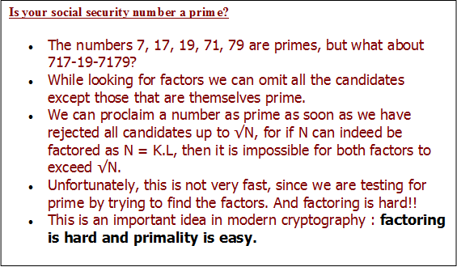
- Primality Testing
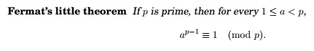
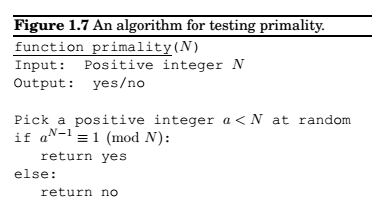
Here the theorem does not say anything about what happens if number is not prime.
In fact, for some composite numbers, Pr(Algorithm returns yes when N is not prime) <= 1/2 We can thus choose k different random integers to test for primality testing, reducing Pr to $1/2^k$.- Generating random primes
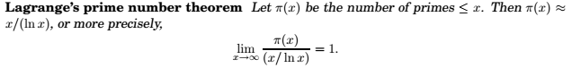
Due to such abundance of prime numbers, prime number generation is easy.- Generate a random n-bit number.
- Check for primality.
- If not prime, repeat the process.
- Generating random primes
Cryptography
Rivest-Shamir-Adelman(RSA) : Blabber about private key and public key systems.
- Private-key schemes: one time pad and AES
- RSA
Public key cryptography
Based heavily upon number theory.
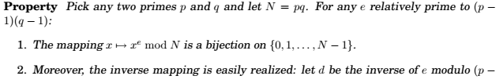
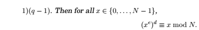
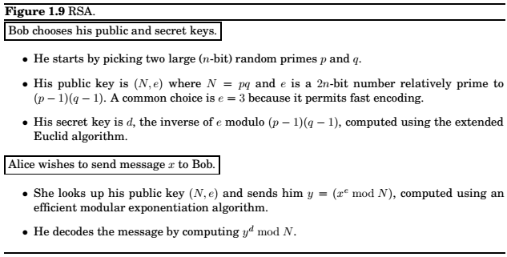
Universal Hashing
- Hash Tables
Give a
keyto anyvalue.
Hash function : How to define the mapping betweenkeyandvalue. - Families of Hash Functions
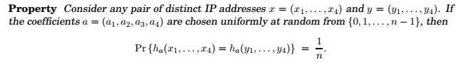
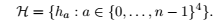
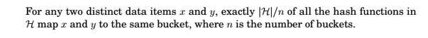
A family of hash functions with this property is called universal .